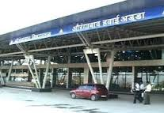

From wikipedia free encyclopedia
Aurangabad Division is one of the seven Administrative Division of Maharashtra state in india.it lies in the Marathwada region of Maharashtra.
| District | population | litracy |
|---|---|---|
| Aurangabad | 10,000 | 50% |
| Beed | 10,000 | 50% |
| Jalna | 10,000 | 50% |
| osmnabad | 10,000 | 50% |
| Nanded | 10,000 | 50% |
| Parbhani | 10,000 | 50% |
| Latur | 10,000 | 50% |
| Hingoli | 10,000 | 50% |
Marathi,Deccan urdu
Nanded is a city in Maharashtra state of India, the 8th largest Urban agglomeration of Maharashtra, and the 81st most populous city in India. It is also headquarters of Nanded district and second largest city in Marathwada region after Aurangabad. Nanded has been a major place for Sikh pilgrimage.[2] 10th Sikh Guru, Guru Gobind Singh made Nanded as his permanent abode and passed Guruship to Guru Granth Sahib before his death in 1708 in Nanded.[3] Nanded is located on the banks of Godavari river. Nanded was famous for its Vedic rituals on the sacred banks of river Godavari. Urvashi Ghat, Ram Ghat, Govardhan Ghat are some of them . Nanded has been the regional education hub which has Swami Ramanand Teerth Marathwada University at Vishnupuri. Nanded is also known for its health services.
Aurangabad District is one of the 36 districts of Maharashtra state in western India. It is bordered by the districts of Nashik to the west, Jalgaon to the north, Jalna to the east, and Ahmednagar to the south. Aurangabad is the headquarters and principal city. The district covers an area of 10,100 km², out of which 141.1 km² is urban area and 9,958.9 km² is rural. Aurangabad district is a major tourism region in Marathwada.
Osmanabad About this sound pronunciation (help·info) (transliterated in Marathi as Usmanabad) is a city and a municipal council in Osmanabad district in the Indian state of Maharashtra.
Beed (Marathi:बीड) is a city in central region of Maharashtra state in India. It is the administrative headquarters and the largest city with a population of 146,709 in Beed district.[2] Nearly 36% of the district’s urban population lives in the city alone. It has witnessed 6.1% population growth during 2001 – 2011 decade.
Jalna district (Marathi: जालना जिल्हा) is an administrative district in the state of Maharashtra in western India. Jalna town is the district headquarters. The district is part of Aurangabad division.
Jalna district (Marathi: जालना जिल्हा) is an administrative district in the state of Maharashtra in western India. Jalna town is the district headquarters. The district is part of Aurangabad division.
Marathwada was initially under Nizam's regime. Hingoli was the taluka of Parbhani district and part of Nizam's regime. It was actually Nizam's military base as it was border place with Vidhrabha. In that era military troops, hospitals, veterinary hospital were in operation from Hingoli. Residents of Hingoli had experienced two big wars between Tipu Sultan and Maratha in 1803 and in 1857 between Nagpurkar and Bhosale. Being a military base the city was one of the important and famous place of the Hydrabad State.